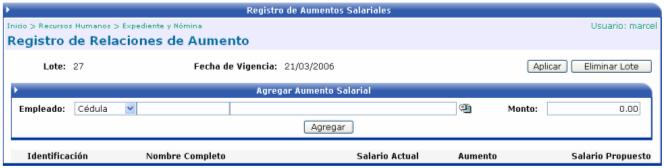
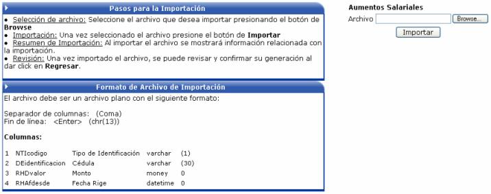
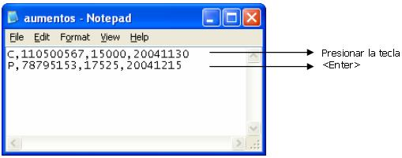

Las relaciones de aumento se agrupan por fecha, a partir de la cual, van a regir los aumentos salariales que van a ser registrados.
Una vez agregada la fecha, se debe de seleccionar el empleado y digitar el monto del aumento.

En la siguiente pantalla de lista de lotes
de aumentos salariales, esta el botón de  el cual sirve
para cargar masivamente aumentos, desde un archivo de texto:
el cual sirve
para cargar masivamente aumentos, desde un archivo de texto:

Las instrucciones a seguir y el formato que tiene que tener el archivo de texto, se describen a continuación:

Pasos para la Importación:
Selección de Archivo: seleccione el archivo que desea cargar presionando el botón “Browse”

Importación: una vez seleccionado el archivo presione el botón de “Importar”

Resumen de Importación: al importar el archivo se mostrará información relacionada con al importación.
Revisión: una vez importado el archivo puede revisar la importación en la lista de lotes de aumentos salariales.
Formato del Archivo de Importación:
El archivo debe ser un archivo plano y debe de tener las siguientes columnas:
1. Tipo de Identificación del Empleado (Cédula = C, Pasaporte = P)
2. Identificación del Empleado.
3. Monto del aumento.
4. Fecha de Vigencia del aumento, con el formato yyyymmdd
Para separar las columnas se debe de utilizar una coma (,) y para el fin de línea se debe de presionar la tecla <Enter>
Un ejemplo del archivo a importar es el siguiente:

Para que los aumentos afecten el cálculo de la nómina es importante recordar que se debe de Aplicar el lote de aumentos salariales.